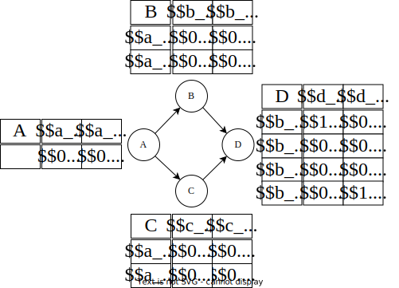

Dimacs file format
Notice that our encoding is very similar to WMC encodings. For more informations about the WMC encodings used in our experiments, see [1,2] One particularity of Schlandals is that distributions are first order citizens, they are not transformed into clauses. Hence, we extended the classical DIMACS format to be able to defined distributions; a set of mutually exclusive, weighted, variables that sum up to 1. The variables inside a distributions are always the lowest indexes (1, 2, ...).
As an example, let us consider the following network

Header
The header is a single line in the format
p cnf <number variables> <number clauses>
The distributions
The distributions defined in the BN (\( P(A), P(B \mid A = a_0), P(C \mid A = a_1), \ldots \) are directly encoded in the file
c p distribution 0.2 0.8
c p distribution 0.6 0.4
c p distribution 0.3 0.7
...
Notice that the lines starts with c but are not comments.
Moreover, the variables associated with the distributions are not explicitly declared; they are assigned in order.
That is, the first distribution (\( P(A)\)) is composed of variable 1 and 2 (variables in DIMACS format starts at 1), distribution \( P(B \mid A = a_0) \) is composed of variables 3 and 4, etc.
Deterministic variables
The remaining variables (i.e., number variables minus the number of variables used for the distributions) are deterministic variables (without a weight).
There is one variable for each value of each network's variable.
For example, 18 variables are needed to encode the distributions, hence variable 19 will be \( a_0\) and variable 20 \( a_1\).
On total there are 18 + 8 = 26 variables. As of now, our file looks like
p cnf 26 <number clauses>
c p distribution 0.2 0.8
c p distribution 0.6 0.4
c p distribution 0.3 0.7
c p distribution 0.25 0.75
c p distribution 0.75 0.25
c p distribution 1.0 0.0
c p distribution 0.35 0.65
c p distribution 0.8 0.2
c p distribution 0.0 1.0
The Clauses
The clauses encode the implicit constraints of the CPTs. As an example, let us consider the first line of the CPT for variable B. This line is encoded with the two following constraints, written in English: - If \( A \) takes value \( a_0 \) and entry \( 0.6 \) is selected, then \( B \) must take value \( b_0 \) - If \( A \) takes value \( a_0 \) and entry \( 0.4 \) is selected, then \( B \) must take value \( b_1 \) Using the variables defined above, this can be encoded as - \( 19 \land 3 \Rightarrow 21 \Leftrightarrow \lnot 19 \lor \lnot 3 \lor 21 \) - \( 19 \land 4 \Rightarrow 22 \Leftrightarrow \lnot 19 \lor \lnot 4 \lor 22 \)
The file now looks like
p cnf 26 <number clauses>
c p distribution 0.2 0.8
c p distribution 0.6 0.4
c p distribution 0.3 0.7
c p distribution 0.25 0.75
c p distribution 0.75 0.25
c p distribution 1.0 0.0
c p distribution 0.35 0.65
c p distribution 0.8 0.2
c p distribution 0.0 1.0
c CPT for A.
-1 19 0
-2 20 0
c CPT for B.
-3 -19 21 0
-4 -19 22 0
-5 -20 21 0
-6 -20 22 0
c CPT for C.
-7 -19 23 0
-8 -19 24 0
-9 -20 23 0
-10 -20 24 0
c CPT for D.
-11 -21 -23 25 0
-12 -21 -23 26 0
-13 -21 -24 25 0
-14 -21 -24 26 0
-15 -22 -23 25 0
-16 -22 -23 26 0
-17 -22 -24 25 0
-18 -22 -24 26 0
The evidences
Evidences are knowledge about some parts of the probabilistic models. For Bayesian network, this means that it is known that some variables takes some values (e.g., \( D = d_0 \). Such evidence are encoded, in Schlandals, using the deterministic variables: we add the constraints \( \lnot d_1 \). For such evidence, the final file looks like
p cnf 26 19
c p distribution 0.2 0.8
c p distribution 0.6 0.4
c p distribution 0.3 0.7
c p distribution 0.25 0.75
c p distribution 0.75 0.25
c p distribution 1.0 0.0
c p distribution 0.35 0.65
c p distribution 0.8 0.2
c p distribution 0.0 1.0
c CPT for A.
-1 19 0
-2 20 0
c CPT for B.
-3 -19 21 0
-4 -19 22 0
-5 -20 21 0
-6 -20 22 0
c CPT for C.
-7 -19 23 0
-8 -19 24 0
-9 -20 23 0
-10 -20 24 0
c CPT for D.
-11 -21 -23 25 0
-12 -21 -23 26 0
-13 -21 -24 25 0
-14 -21 -24 26 0
-15 -22 -23 25 0
-16 -22 -23 26 0
-17 -22 -24 25 0
-18 -22 -24 26 0
-26 0
References
[1] Mark Chavira and Adnan Darwiche. On probabilistic inference by weighted model counting. Artificial Intelligence, 172(6-7), 2008.
[2] Anicet Bart, Frédéric Koriche, Jean-Marie Lagniez, and Pierre Marquis. An improved CNF encoding scheme for probabilistic inference. In Proceedings of the Twenty-second European Conference on Artificial Intelligence, 2016.